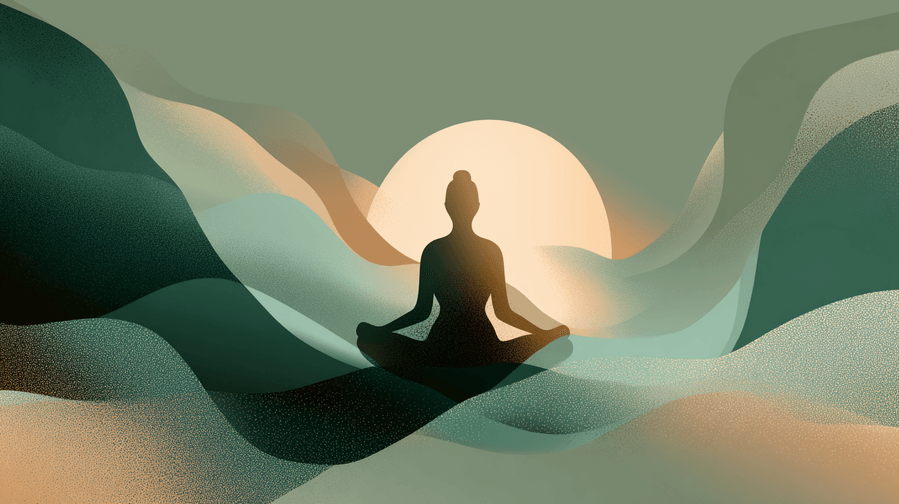
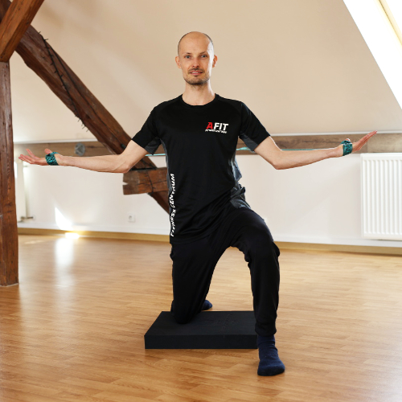

Masáže • Zdravotní cvičení • Kondiční trénink
Holistický přístup k vašemu zdraví v Brně


Pocházím z malebné bělokarpatské oblasti Moravských Kopanic. Už od dětství mě fascinovala příroda, zvířata a léčivé rostliny. To mě přivedlo ke studiu oboru veterinárního asistenta, kde jsem se zabýval rehabilitací zvířat, zejména psů a koní. Bylo úžasné sledovat, jaké metody skutečně fungují – na zvířata totiž neplatí onen placebo efekt.
Má pozornost se ale stále více stáčela na zdraví lidské, jelikož i my jsme součástí přírody. Postupně jsem objevil přírodní medicínu, masáže, makrobiotiku i tradiční východní medicínu. K tomu se přidalo bojové umění, jóga a buddhismus. Začal jsem studovat osteopatii – holistický přístup, který propojuje pohybový aparát s vnitřními orgány i duševním zdravím.
Klíčovým momentem bylo 4leté studium u MUDr. Kateřiny Smíškové (Škola zad), kde jsem pracoval s dětmi se skoliózou a pacienty s výhřezy disků. Její znalosti biomechaniky jsou hluboké a výrazně ovlivnily můj přístup k terapii. Studium pilates mi pak otevřelo svět vývojové kineziologie a reformerů, které pohybu dávají úplně novou hloubku. Jemnost v přístupu k pohybu i masážím mi přináší program Prožij pohyb Dáši Moc Králové PhD., vycházející z metody Trager Approach.
Ode mě nedostanete vojenskou drezuru, ale nadšení pro hravé zkoumání pohybu a zdraví jako celku. Nabízím komplexní péči – od masáží a cvičení přes výživové poradenství až po relaxační techniky.
Osteopatie, pilates, jóga, spirální stabilizace, funkční trénink
Holistická péče o tělo, mysl i duši
20 let zkušeností s masážemi a prací s pohybem
Propojení západní a východní medicíny
Individuální lekce a masáže probíhají na adrese Palackého 22 v Brně, kde je k dispozici plně vybavený prostor – TRX, kettlebelly, hrazda, odporové gumy, Flowin, BOSU, medicinbaly, činky i pomůcky pro spirální stabilizaci (SPS). Ve fitness & wellness klubu Zone 4 You vedu sálové lekce spirální stabilizace a pilates, včetně lekcí na pilates reformeru, a zároveň zde poskytuji masáže. Občas mě můžete potkat také na DogPilates – jedinečných pilates lekcích v přítomnosti štěňátek.
Široká škála masážních technik – od metody Dr. Smíška, přes reflexní terapii, lymfatickou masáž až po Lomi-lomi a Shiatsu.
Zjistit víceSpirální stabilizace páteře, jóga, pilates. Nápravné cvičení, prevence bolesti a zlepšení mobility.
Zjistit víceIndividuální tréninkové plány pro zlepšení kondice a síly. Funkční trénink s ohledem na zdraví.
Zjistit víceZkušenosti s makrobiotiku, bylinkami a různými výživovými směry. Individuální výživový plán.
Vedení k vnitřnímu klidu, techniky relaxace a meditační praxe inspirovaná buddhismem.
Kombinace všech služeb pro celostní přístup – masáže, cvičení, výživa i relaxace.
Palackého třída 22
612 00 Brno - Královo pole